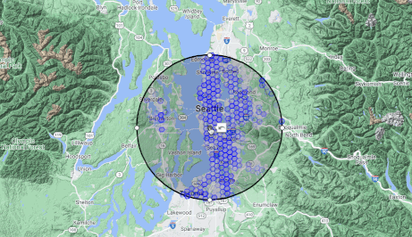

Welcome to VectorGeo!
This site uses a deep embedding model to build a vector space representation of the world.
How to Use
- Move the circle around to query different areas. The circle's center is the query point.
- Shrink or expand the circle for a smaller or bigger search area. Only sites within the circle will be included in the search
- Adjust the coverage fraction slider to tweak the sensitivity.
